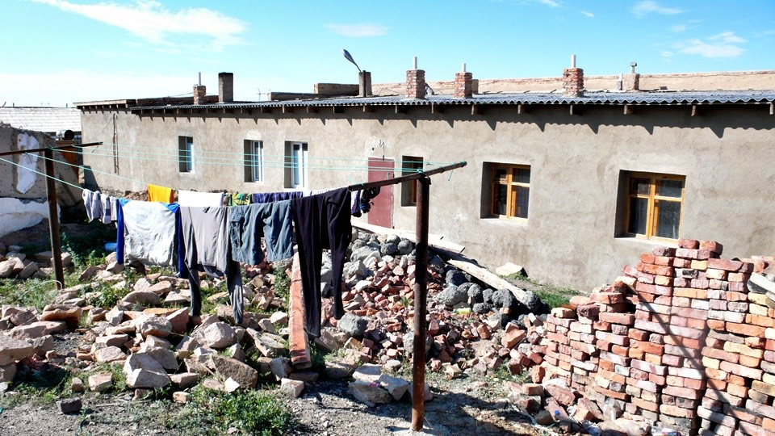
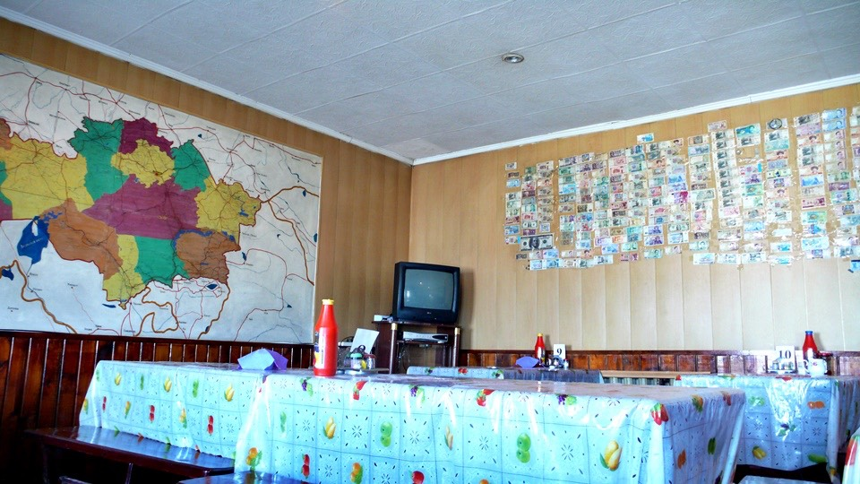
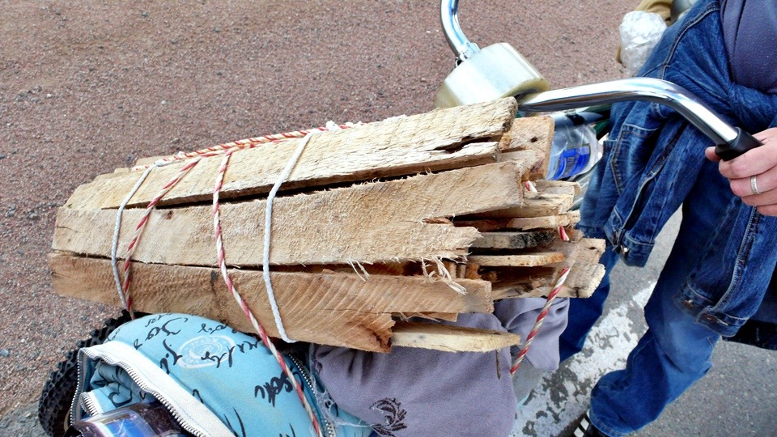
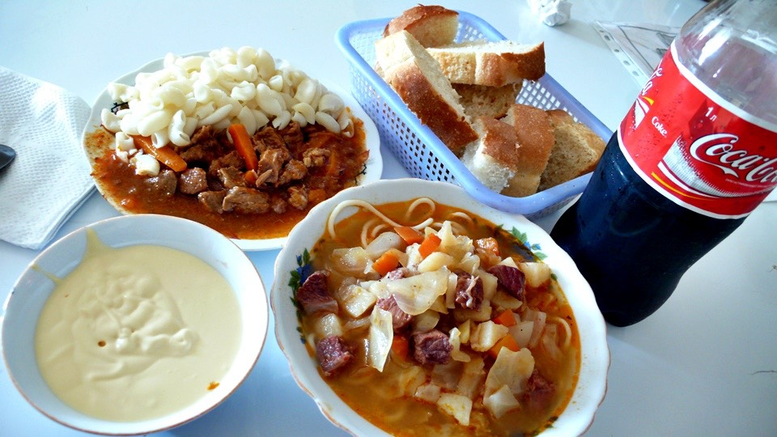
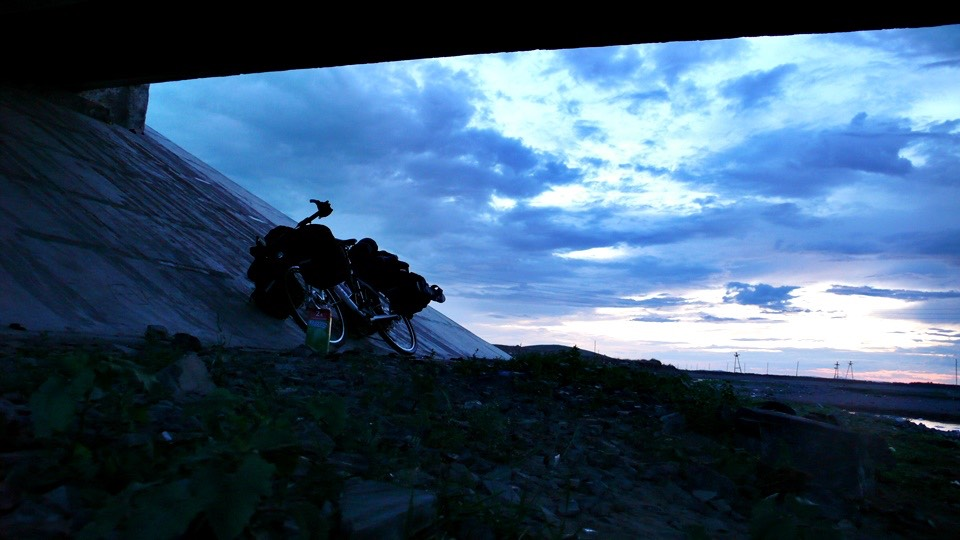
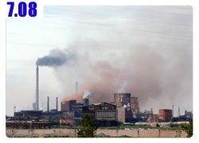

睡在一躺下去就整個人陷入其中的超軟彈簧床裡，不知不覺又睡過頭了，睜開眼睛已經將近早上九點鐘。
這樣感覺也挺好的，在中國是騎幾天車就休息一天，在哈薩克是天天都很休閒，騎得不多，充分休息。
昨天洗好的衣服晾在浴室裡，過了一個晚上還是跟昨天剛晾的時候一樣的濕，浴室裡不透風又太潮濕，可我一點也不想穿濕衣服騎車。
趁著外頭天氣好得不得了，將衣服全部拿去外面曬，大風吹的衣服搖搖擺擺，等等收衣服的時候肯定要到地上用撿的了。

趁曬衣服的時候在餐廳裡吃早餐喝熱奶茶配麵包，還有燴麵，馬鈴薯跟胡蘿蔔切丁煮得很軟、很好吃。
早餐非常的便宜，這麼大一碗的燴麵只要210元，而熱騰騰的奶茶一杯是35元，我連喝了四杯，結帳的時候也只跟我收35元，是無限暢飲的。
餐廳裡有一些很別致的裝飾，像是用顏色區分的哈薩克地圖，原來哈薩克也有分行政區的呀。

還有一面貼滿各國錢幣的牆，里拉、美元、人民幣、韓圓、盧布，還有一堆沒看過的貨幣，每張錢幣上面還有張貼人的簽名跟留言，
回去翻行李包包，期盼能找到一張新台幣，但是印象中我沒有帶...
好想在牆壁上留下些我到過這裡的紀念，翻著翻著找到機票的存根，回餐廳問老闆娘可以貼這個在牆上嗎？
她看了一看問我這是啥米？
我就比著飛行的姿勢，說這是機票。老闆娘點頭同意說可以貼～喔耶！
可是店裡沒有膠帶了，所以只好再回去翻行李，找到固定痠痛貼布的小膠帶，機票的四個角落都給它貼上。
上面還寫了一些留言，這面牆上也有台灣人的足跡囉～
沿路這些我提到的哈薩克餐廳、旅館，都是位於這一條主要道路上，如果有人也是用自助旅行的方式在哈薩克流浪，一定會經過這些地方。
要是能夠遇到遊記中熟悉的身影，請不要吝嗇和他們打聲招呼 :D
用完早餐之後去曬衣服的地方從地上一件一件的將衣服給撿起來，唯一沒有掉到地上的是兩雙襪子，因為還沒有乾。
騎車穿的衣物，都是排汗快乾系列的，就只有襪子非常的難乾，好加在有帶兩雙，只要一次洗一雙，然後穿另外一雙就可以了。
昨天一口氣全部都拿去洗，忘了襪子不會乾這件事情，等發現的時候已經來不及了。
所以今天出發的時候是赤腳穿著登山鞋， 中午十一點才離開阿克恰套。
將襪子綁在睡袋的地方，邊騎車邊讓襪子曬太陽兼風乾，這一招很好用，最多曾經綁了內褲、短褲、襪子和睡衣，一路飄盪的騎著車。
今天只需要騎一百公里就可以到有人煙的地方，距離不遠所以心理壓力不大，出發前才填飽肚子，水喝得很撐，又在餐廳買了兩個熱狗麵包當點心。
準備得很充裕，所以騎起來感覺格外輕鬆。
今天是要爬山的路，但是海拔不高，一整天也才往上爬了三百多公尺，跟中國變化多端的地形相比真是太愜意了。
其實跟之前一樣都是上上下下的山坡路，只是上坡變得比較多，而下坡變得比較少，要是不看手錶的海拔計，還真不知道自己正越騎越高。
下午一點半這些襪子終於乾了，可以穿著襪子接著騎。

風勢一整天都是側風，連早上曬乾的衣服都能吹到地上那樣的強度，好加在不是逆風，所以還能騎得動車。
出現下坡的時候整個人就很開心～
半路經過一個有著雙風扇大風車的農場，這邊連電線桿都沒有，所以得靠自己發電，在哈薩克旅行，常常手機都是處於沒有訊號的狀態。
雙風扇轉起來比較有效率的感覺，而且這個風扇是活動式的，後面有裝一個導流的尾巴，會自己配合風向取得最佳的角度來轉動。
有點佩服這個機關，設計的非常巧妙。
在哈薩克都沒有遇到騎自行車旅行的外國人，也很少看到騎自行車的哈薩克人，只有小孩子在城鎮裡頭騎著玩，沒有被當成主要的交通工具。
今天在路上看到遠方有騎自行車的身影，還以為自己看錯，高舉雙手向他們揮舞，果真是騎自行車的旅行者。
他們是哈薩克人，一對情侶，要騎自行車去巴爾哈許游泳，實在太厲害了，騎幾百公里的單車只為了要去游泳，佩服佩服。
車上除了簡單的行李之外，還攜帶了看起來很重的木材，他們說這是要升火用的，真是酷到不行！
我帶著汽化爐旅行兩個多月，到現在還沒有拿出來煮過東西，他們居然帶著木頭騎車，敬佩敬佩。

快要抵達目的地時，正好是下坡，遠遠的就能看到城鎮的輪廓，光是房子的數量就可以知道那邊還蠻大的。
筆記本裡記錄的事情相當的空白，中午十一點出發的時候寫了一句GO!，而第二次翻開筆記本寫東西時，已經是下午六點，抵達。
房子真的是蠻多的，但大多都是住家、農場、牧場混合的私人建築，沿著道路在城鎮裡滑行，眼光尋找著熟悉的招牌。

看到一間小小的複合式加油站，什麼都好迷你，包含一個小小的修車廠，上面還掛了一個車子形狀的招牌，真是可愛的設計。
從這間迷你加油站往裡頭騎，有一棟餐廳，打算在這裡吃頓飯，然後就要去找地方露營了，填飽肚子之後什麼都好解決。
一進到餐廳就發現生意好得不得了，先從冰箱拿一瓶可樂出來，找一張已經坐著老者和小孩的餐桌，坐下來準備吃飯，小孩立刻幫忙拿了一個玻璃杯。
這邊的人喝大瓶的飲料都會用杯子喝，雖然我用不到，但是既然小孩拿來了，那我就倒一杯給他一起喝，這個小孩是老者的孫子。
店裡有很多的照片，拍攝得太好，猛一看還以為是畫像，照片裡是騎著馬的人，帶著老鷹在狩獵。
而外面餐廳的招牌也畫著一隻老鷹，店裡還有很多的老鷹雕像，看來這間店的老闆一定很喜歡老鷹。
同桌的老者，拿著菜單問我要吃什麼？依然兩手攤開，只要是好吃的，什麼都行。
本來以為這個老者是客人，經過他的朋友介紹才知道原來是老闆大人，而店裡這些照片裡的主角，全都是他年輕的時候。
這個老者叫做『泰雷歐卡波』，看著他騎馬的英姿，手臂上還停著一隻威武的老鷹，真的是帥到不行。
泰雷歐卡波跟餐廳的人吩咐煮東西給我吃，看我很餓的樣子，一口氣送來了燴麵、肉醬通心麵、奶酪、麵包、熱奶茶和一瓶可樂，全部都是很好吃的食物。
而且是免費請我吃，能吃多少就盡量吃吧，吃不夠還有，不用客氣。

飢腸轆轆的我看著滿桌的食物，想起村上的遊記提到，他在年輕的時候也做過貧困的自助旅行，在世界上的某個角落餓到兩眼發昏，
然後被陌生的好心人，沒來由的請吃一頓大餐。
之後他年紀大了，旅行的方式不再那麼刻苦，當他遇到貧困的旅行者，則換他當那位陌生的好心人。
(書裡是在墨西哥，遇到一位曬得黝黑，在海邊游泳的日本少年)
吃的美味的餐點，將來我也要在世界的另一個角落，慷慨的將這份善意繼續分享下去。
席間，同桌的友人，巴呵姜，幫忙做簡單的翻譯，因為他是電影導演兼攝影師，英文說得比我的哈薩克話好。
巴呵姜流覽著相機裡的照片，看到風車那一張的時候，指著泰雷歐卡波，說這是他的作品。
是不是這麼巧？哈薩克這麼大，下午看到一個有趣的風車，晚上就被我遇到風車的設計者。
肚子吃的撐撐的，泰雷歐卡波又從冰箱拿了一大瓶可樂說要讓我帶著路上喝，他八歲大的孫子，魯德蘭，已經開始上學了。
在哈薩克要上學應該不是人人都有的權利，但是爺爺是個大人物，所以很重視小孩的教育，小孩的媽媽也是一位醫生呢。
魯德蘭抓了一大把的糖果塞到我的腰包裡面，給我當禮物。
本來泰雷歐卡波說從這個鎮往下走二十公里，他在那邊擁有一棟大農場，他可以載著我和小多過去那裡過夜。
但是要被車子載著走二十公里，有點太投機取巧，明天總不能又要請泰雷歐卡波把我載回鎮上，讓我從這邊出發騎車吧？
謝過他的好意，我說搭帳篷露營沒有問題，已經習慣了，他也笑笑得不勉強我一定要去過夜。
泰雷歐卡波跟他的朋友和孫子要回去之前，一起在小多和餐廳前面拍了一張照片。
老闆走之後，還交代員工說找個地方讓我用電腦，有什麼需要直接講不要客氣。
這個鎮上的餐廳這麼多間，就遇到好心人大力相助，請我吃晚餐，又處處給我方便，真是無比親切的人。
餐廳在晚上十一半就停止營業關門打烊，在這邊已經得到很多幫助，如果繼續要求住在這裡一晚上就太麻煩別人。
買了一大盒的蘋果汁，牽著小多離開餐廳尋找可以過夜的地方，在離開鎮上的橋下有小河經過，那邊看起來蠻安靜的。
走過去看了一下發現除了四周瀰漫著便便的味道之外，這邊還挺舒適。

將小多的包包卸下來，藏在橋墩和斜坡的縫隙處，小多則和我睡在斜坡下，頭頂就是橋，車輛經過就會發出轟隆的聲響。
好熟悉的畫面，回想起之前當兵的時候，在憲兵機車連服役，每年的國慶前導都是最重要的勤務，好幾個月前就開始教練。
炎熱的夏天還會離開司令部到中正橋那邊練車，中午的時候就睡在中正橋下的堤防，和現在的情形簡直一模一樣。
只是當時睡的是從連上帶出來的涼蓆，現在則窩在睡袋裡頭，手裡還握著手電筒，耳朵仔細的聆聽周遭有沒有風吹草動。
想要放鬆的睡著，但是又不敢將最後一絲的警戒心也給放掉，在沒有人煙的地方露營就比較難睡得安心。
躺到十一點，開始有點睡意，閉上眼睛的時候感覺到一陣亮光照射，好像有人拿手電筒照著我一樣，猛然張開眼睛可是什麼也沒看到。
四周除了蟲鳴鳥叫之外，就是涓涓小溪流動的聲音，定睛仔細看，原來空中正在大作閃電，這就是強光的來源。
看著黑壓壓的烏雲，和從天空劈下的閃電，夜裡好像會下大雨的樣子。
好加在今天不是露天睡覺，萬一真的下雨了，也有橋可以擋雨。
昨天還睡在柔軟的彈簧床，今晚則躺在飄著奇怪味道的橋下，旅行真是一種奇妙的體驗。
繼續閱讀：7.8 妖怪煙囪

哈薩克-堅戈－ 1：0.26 台幣
7.7
總計：305元
早餐熱奶茶、麵包、燴麵245元、熱狗麵包60元